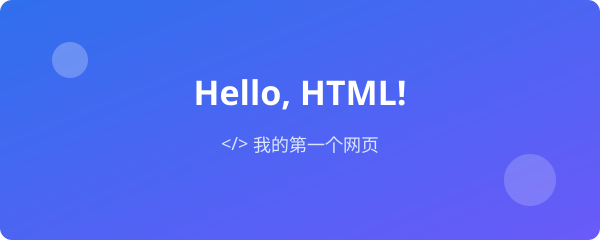
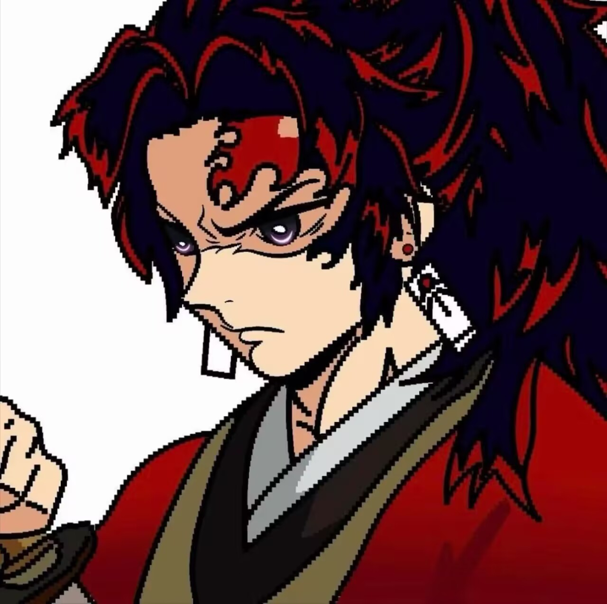

我的第一篇 HTML 学习笔记

HTML 就像盖房子的骨架，负责搭出页面的结构； CSS 则是装修，负责让页面变漂亮。
今天我学到的重要知识点：
- <head> 里放"看不见的信息"（编码、标题、样式）
- <body> 里放"看得见的内容"（文字、图片、链接）
- 语义化标签让代码更好读：header / nav / main / footer

记录学习 · 分享生活

HTML 就像盖房子的骨架，负责搭出页面的结构； CSS 则是装修，负责让页面变漂亮。
今天我学到的重要知识点：
页面上每个元素都是一个"盒子"，从里到外分别是： 内容 content → 内边距 padding → 边框 border → 外边距 margin。 就像一幅画：画是内容，画和边框的距离是 padding，画框是 border， 画框和墙上另一幅画的距离是 margin。